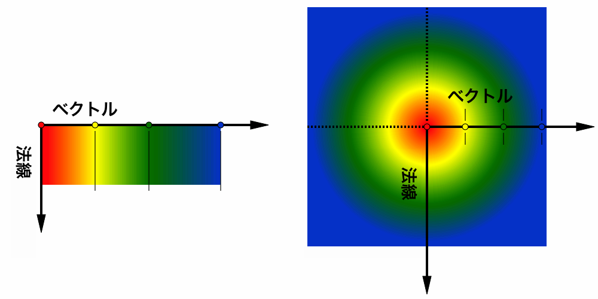

SVG においては、図形とテキストに対し, 次のいずれかを用いてフィル（すなわち内部への塗り）およびストローク（すなわち外形線への塗り）を適用することができる： With SVG, you can fill (i.e., paint the interior) or stroke (i.e., paint the outline) of shapes and text using one of the following:
SVG では ペイントサーバ という一般概念が用いられる。 グラデーションとパターンは組み込みのペイントサーバの一種に過ぎない。 SVG uses the general notion of a paint server. Gradients and patterns are just specific types of built-in paint servers.
ペイントサーバは fill あるいは stroke プロパティの IRI 参照 から参照される。 Paint servers are referenced using an IRI reference on a ‘fill’ or ‘stroke’ property.
グラデーションとはベクトルに沿った色から色への連続的で滑らかな色の変化である。 この色の変化は同じベクトルに沿って更に別の色へ変化させられ得る。 SVG には２種類のグラデーション： 線型グラデーション （ linear gradients ）, 放射型グラデーション （ radial gradients ）がある。 Gradients consist of continuously smooth color transitions along a vector from one color to another, possibly followed by additional transitions along the same vector to other colors. SVG provides for two types of gradients: linear gradients and radial gradients.
いったんグラデーションが定義されれば、 グラフィックス要素 の fill あるいは stroke プロパティからの参照により，その要素のフィルやストロークにグラデーションが利用できるようになる。 Once defined, gradients are then referenced using ‘fill’ or ‘stroke’ properties on a given graphics element to indicate that the given element shall be filled or stroked with the referenced gradient.
色変化の勾配ベクトルの角度は勾配法線により定まる。 すなわち，グラデーションあるいはそれを参照している グラフィックス要素 に変換が適用される前において、勾配法線と勾配ベクトルは互いに垂直である。 グラフィックス要素 がグラデーションを参照している場合、概念的には，勾配ベクトルと勾配法線の複製が作成され，それらが グラフィックス要素 自身の幾何の一部として扱われる。 グラフィックス要素 の幾何に適用される変換は、複製された勾配ベクトルと勾配法線にも適用される。 参照先のグラデーションに指定されるグラデーション変換が グラフィックス要素 の変換が適用される前に，そのグラデーションに適用される。 The angle of the color transitions along the gradient vector is defined by the gradient normal. Before any transforms are applied to the gradient or its referencing graphics element, the gradient normal is perpendicular with the gradient vector. If a graphics element references a gradient, conceptually the graphics element should take a copy of the gradient vector and gradient normal and treat it as part of its own geometry. Any transformations applied to the graphics element geometry also apply to the copied gradient vector and gradient normal. Any gradient transforms that are specified on the reference gradient are applied before any graphics element transformations are applied to the gradient.
線型グラデーションは linearGradient 要素で定義される。 Linear gradients are defined by a ‘linearGradient’ element.
属性定義
属性 x1, y1, x2, y2 に対する座標系を定義する。 Defines the coordinate system for attributes ‘x1’, ‘y1’, ‘x2’ and ‘y2’.
gradientUnits="userSpaceOnUse" の場合、属性 x1, y1, x2, y2 は、グラデーション要素が参照された所における現在の利用座標系（すなわち， fill あるいは stroke プロパティによりグラデーション要素を参照している要素の利用座標系）に対し， gradientTransform 属性で指定される変換を適用した結果の座標系における値を表す。 If gradientUnits="userSpaceOnUse", ‘x1’, ‘y1’, ‘x2’ and ‘y2’ represent values in the coordinate system that results from taking the current user coordinate system in place at the time when the gradient element is referenced (i.e., the user coordinate system for the element referencing the gradient element via a ‘fill’ or ‘stroke’ property) and then applying the transform specified by attribute ‘gradientTransform’.
gradientUnits="objectBoundingBox" の場合、属性 x1, y1, x2, y2 の利用座標系は、グラデーションが適用される要素の限界ボックス（ オブジェクトの限界ボックスに対して相対的な単位 を見よ）を基に gradientTransform 属性で指定される変換を適用して確立される。 If gradientUnits="objectBoundingBox", the user coordinate system for attributes ‘x1’, ‘y1’, ‘x2’ and ‘y2’ is established using the bounding box of the element to which the gradient is applied (see Object bounding box units) and then applying the transform specified by attribute ‘gradientTransform’.
gradientUnits="objectBoundingBox" の場合、 gradientTransform を単位行列とするなら、線型グラデーションの勾配法線は，オブジェクトの限界ボックス空間（すなわち (0,0) がオブジェクトの限界ボックスの左上隅, (1,1) が右下隅に対応するような抽象的な座標系）において，勾配ベクトルに対し垂直になる。 オブジェクトの限界ボックスが正方形でないならば、初期状態ではオブジェクトの限界ボックスにおいて勾配ベクトルに垂直なグラデーションの勾配法線は，利用空間においては勾配ベクトルに対し垂直に描画されない。 勾配ベクトルが限界ボックスのいずれかの座標軸に平行な場合、グラデーションの勾配法線は垂直に保たれる。 この変換は限界ボックス空間から利用空間への不均等な拡縮変換が適用されることによる。 When gradientUnits="objectBoundingBox" and ‘gradientTransform’ is the identity matrix, the normal of the linear gradient is perpendicular to the gradient vector in object bounding box space (i.e., the abstract coordinate system where (0,0) is at the top/left of the object bounding box and (1,1) is at the bottom/right of the object bounding box). When the object's bounding box is not square, the gradient normal which is initially perpendicular to the gradient vector within object bounding box space may render non-perpendicular relative to the gradient vector in user space. If the gradient vector is parallel to one of the axes of the bounding box, the gradient normal will remain perpendicular. This transformation is due to application of the non-uniform scaling transformation from bounding box space to user space.
gradientUnits 属性が指定されていない場合の効果は、値 objectBoundingBox が指定されたときと同じになる。 If attribute ‘gradientUnits’ is not specified, then the effect is as if a value of 'objectBoundingBox' were specified.
アニメーション：可グラデーションの座標系から対象の座標系（すなわち userSpaceOnUse あるいは objectBoundingBox ）への追加の変換を定義する。 これによりグラデーションを斜傾させたりできる。 この追加の変換行列は、 オブジェクトの限界ボックスに対して相対的な単位 から利用空間への変換に必要となる暗黙の変換も含めた，それまで定義された変換に対し、右から乗算する。 Contains the definition of an optional additional transformation from the gradient coordinate system onto the target coordinate system (i.e., userSpaceOnUse or objectBoundingBox). This allows for things such as skewing the gradient. This additional transformation matrix is post-multiplied to (i.e., inserted to the right of) any previously defined transformations, including the implicit transformation necessary to convert from object bounding box units to user space.
gradientTransform 属性が指定されていない場合の効果は、恒等変換が指定されたときと同じになる。 If attribute ‘gradientTransform’ is not specified, then the effect is as if an identity transform were specified.
アニメーション：可x1, y1, x2, y2 は、線型グラデーションに対する 勾配ベクトル を定義する。 勾配ベクトル は グラデーションストップ が写像される始点と終点を与える。 x1, y1, x2, y2 の値は数値でも百分率でもよい。 ‘x1’, ‘y1’, ‘x2’ and ‘y2’ define a gradient vector for the linear gradient. This gradient vector provides starting and ending points onto which the gradient stops are mapped. The values of ‘x1’, ‘y1’, ‘x2’ and ‘y2’ can be either numbers or percentages.
この属性が指定されていない場合の効果は、値 '0%' が指定されたときと同じになる。 If the attribute is not specified, the effect is as if a value of '0%' were specified.
アニメーション：可x1 を見よ。 See ‘x1’.
この属性が指定されていない場合の効果は、値 '0%' が指定されたときと同じになる。 If the attribute is not specified, the effect is as if a value of '0%' were specified.
アニメーション：可x1 を見よ。 See ‘x1’.
この属性が指定されていない場合の効果は、値 '100%' が指定されたときと同じになる。 If the attribute is not specified, the effect is as if a value of '100%' were specified.
アニメーション：可x1 を見よ。 See ‘x1’.
この属性が指定されていない場合の効果は、値 '0%' が指定されたときと同じになる。 If the attribute is not specified, the effect is as if a value of '0%' were specified.
アニメーション：可対象矩形の境界の内側でグラデーションが終端されるときの，残りの領域の塗り方を指定する。 値 pad の場合、グラデーションの両端の色で対象領域の残りの部分が塗り潰される。 値 reflect の場合、グラデーションパターンが，開始〜終止, 終止〜開始, 開始〜終止…等々と折り返されながら，対象矩形が塗り潰されるまで延伸される。 値 repeat の場合、グラデーションパターンが，開始〜終止, 開始〜終止, 開始〜終止…等々と繰り返されながら，対象矩形が塗り潰されるまで延伸される。 Indicates what happens if the gradient starts or ends inside the bounds of the target rectangle. Possible values are: 'pad', which says to use the terminal colors of the gradient to fill the remainder of the target region, 'reflect', which says to reflect the gradient pattern start-to-end, end-to-start, start-to-end, etc. continuously until the target rectangle is filled, and repeat, which says to repeat the gradient pattern start-to-end, start-to-end, start-to-end, etc. continuously until the target region is filled.
この属性が指定されていない場合の効果は、値 pad が指定されたときと同じになる。 If the attribute is not specified, the effect is as if a value of 'pad' were specified.
アニメーション：可現在の SVG 文書片内の異なる linearGradient または radialGradient 要素への IRI 参照 。 linearGradient 属性が参照先の要素で定義されていて，かつ この要素には定義されていなければ、この要素に継承される。 この要素にグラデーションストップが定義されておらず，かつ 参照先の要素には定義されている（それ自身の xlink:href 属性によるものも含める）ならば、グラデーションストップは参照先の要素からこの要素に継承される。 この継承はいくらでも間接的になり得る。 すなわち、参照先の要素が自身の xlink:href 属性により，属性あるいはグラデーションストップを継承している場合、現在の要素もそれらの属性あるいはグラデーションストップを継承する。 An IRI reference to a different ‘linearGradient’ or ‘radialGradient’ element within the current SVG document fragment. Any ‘linearGradient’ attributes which are defined on the referenced element which are not defined on this element are inherited by this element. If this element has no defined gradient stops, and the referenced element does (possibly due to its own ‘xlink:href’ attribute), then this element inherits the gradient stop from the referenced element. Inheritance can be indirect to an arbitrary level; thus, if the referenced element inherits attribute or gradient stops due to its own ‘xlink:href’ attribute, then the current element can inherit those attributes or gradient stops.
アニメーション：可百分率を x1, y1, x2, y2 に指定しても良い。 gradientUnits="userSpaceOnUse" の場合、百分率は現在のビューポートに相対的な値を表す。 gradientUnits="objectBoundingBox" の場合、百分率はオブジェクトの限界ボックスに相対的な値を表す。 Percentages are allowed for ‘x1’, ‘y1’, ‘x2’ and ‘y2’. For gradientUnits="userSpaceOnUse", percentages represent values relative to the current viewport. For gradientUnits="objectBoundingBox", percentages represent values relative to the bounding box for the object.
x1 = x2 かつ y1 = y2, の場合、最後の グラデーションストップ の色と不透明度を用いた単色で領域が塗られる。 If ‘x1’ = ‘x2’ and ‘y1’ = ‘y2’, then the area to be painted will be painted as a single color using the color and opacity of the last gradient stop.
プロパティ は 先祖から linearGradient 要素に継承されるが， linearGradient 要素を参照する要素からは継承されない。 Properties inherit into the ‘linearGradient’ element from its ancestors; properties do not inherit from the element referencing the ‘linearGradient’ element.
linearGradient 要素は決して直接描画されることはなく、 fill あるいは stroke プロパティからの参照以外の用途はない。 display プロパティは linearGradient 要素に適用されない。 すなわち， linearGradient 要素は display プロパティが none 以外の値に設定されていても 直接描画されることはなく、 linearGradient 要素自身あるいはその先祖において display プロパティが none に設定されていても 参照による利用は可能である。 ‘linearGradient’ elements are never rendered directly; their only usage is as something that can be referenced using the ‘fill’ and ‘stroke’ properties. The ‘display’ property does not apply to the ‘linearGradient’ element; thus, ‘linearGradient’ elements are not directly rendered even if the ‘display’ property is set to a value other than none, and ‘linearGradient’ elements are available for referencing even when the ‘display’ property on the ‘linearGradient’ element or any of its ancestors is set to none.
Example lingrad01 に線型グラデーション・ペイントサーバの参照による矩形のフィルを示す。 Example lingrad01 shows how to fill a rectangle by referencing a linear gradient paint server.
<?xml version="1.0" standalone="no"?>
<!DOCTYPE svg PUBLIC "-//W3C//DTD SVG 1.1//EN"
"http://www.w3.org/Graphics/SVG/1.1/DTD/svg11.dtd">
<svg width="8cm" height="4cm" viewBox="0 0 800 400" version="1.1"
xmlns="http://www.w3.org/2000/svg">
<desc>Example lingrad01 - 線型グラデーション
ペイントサーバによる矩形のフィル</desc>
<g>
<defs>
<linearGradient id="MyGradient">
<stop offset="5%" stop-color="#F60" />
<stop offset="95%" stop-color="#FF6" />
</linearGradient>
</defs>
<!-- 描画領域の枠を青色にする -->
<rect fill="none" stroke="blue"
x="1" y="1" width="798" height="398"/>
<!-- 矩形の内部は線型グラデーション・ペイントサーバを用いて塗られる -->
<rect fill="url(#MyGradient)" stroke="black" stroke-width="5"
x="100" y="100" width="600" height="200"/>
</g>
</svg> |
放射型グラデーションは radialGradient 要素により定義される。 Radial gradients are defined by a ‘radialGradient’ element.
属性定義
属性 cx, cy, r, fx, fy に対する座標系を定義する。 Defines the coordinate system for attributes ‘cx’, ‘cy’, ‘r’, ‘fx’ and ‘fy’.
gradientUnits="userSpaceOnUse" の場合、 cx, cy, r, fx, fy は，グラデーション要素が参照された所における現在の利用座標系（すなわち fill あるいは stroke プロパティによりグラデーション要素を参照している要素の利用座標系）に対し， gradientTransform 属性で指定される変換を適用した結果の座標系における値を表す。 If gradientUnits="userSpaceOnUse", ‘cx’, ‘cy’, ‘r’, ‘fx’ and ‘fy’ represent values in the coordinate system that results from taking the current user coordinate system in place at the time when the gradient element is referenced (i.e., the user coordinate system for the element referencing the gradient element via a ‘fill’ or ‘stroke’ property) and then applying the transform specified by attribute ‘gradientTransform’.
gradientUnits="objectBoundingBox" の場合、 cx, cy, r, fx, fy 属性の利用座標系は，グラデーションが適用される要素の限界ボックス（ オブジェクトの限界ボックスに対して相対的な単位 を見よ）を基に gradientTransform 属性で指定される変換を適用して確立される。 If gradientUnits="objectBoundingBox", the user coordinate system for attributes ‘cx’, ‘cy’, ‘r’, ‘fx’ and ‘fy’ is established using the bounding box of the element to which the gradient is applied (see Object bounding box units) and then applying the transform specified by attribute ‘gradientTransform’.
gradientUnits="objectBoundingBox" の場合、 gradientTransform を単位行列とするなら、放射型グラデーションの輪は，オブジェクトの限界ボックス空間（すなわち (0,0) がオブジェクトの限界ボックスの左上隅, (1,1) が右下隅となるような抽象的な座標系）において真円になる。 オブジェクトの限界ボックスが正方形でないならば，限界ボックス空間から利用空間へは不均等な拡縮変換が適用されるので、この概念的な限界ボックス空間において真円の輪は，利用空間においては楕円形になる。 When gradientUnits="objectBoundingBox" and ‘gradientTransform’ is the identity matrix, then the rings of the radial gradient are circular with respect to the object bounding box space (i.e., the abstract coordinate system where (0,0) is at the top/left of the object bounding box and (1,1) is at the bottom/right of the object bounding box). When the object's bounding box is not square, the rings that are conceptually circular within object bounding box space will render as elliptical due to application of the non-uniform scaling transformation from bounding box space to user space.
gradientUnits 属性が指定されていない場合の効果は、値 objectBoundingBox が指定されたときと同じになる。 If attribute ‘gradientUnits’ is not specified, then the effect is as if a value of 'objectBoundingBox' were specified.
アニメーション：可グラデーションの座標系から対象の座標系（すなわち userSpaceOnUse あるいは objectBoundingBox ）への追加の変換を定義する。 これによりグラデーションを斜傾させたりできる。 この追加の変換行列は、 オブジェクトの限界ボックスに対して相対的な単位 から利用空間への変換に必要となる暗黙の変換も含めた，それまで定義された変換に対し、右から乗算する。 Contains the definitions of an optional additional transformation from the gradient coordinate system onto the target coordinate system (i.e., userSpaceOnUse or objectBoundingBox). This allows for things such as skewing the gradient. This additional transformation matrix is post-multiplied to (i.e., inserted to the right of) any previously defined transformations, including the implicit transformation necessary to convert from object bounding box units to user space.
gradientTransform 属性が指定されていない場合の効果は、恒等変換が指定されたときと同じになる。 If attribute ‘gradientTransform’ is not specified, then the effect is as if an identity transform were specified.
アニメーション：可cx, cy, r は放射型グラデーションに対する最大の（すなわち最外縁の）円を定義する。 グラデーションは 100% の グラデーションストップ がこの最大の円の周上に写像されるように描かれる。 ‘cx’, ‘cy’ and ‘r’ define the largest (i.e., outermost) circle for the radial gradient. The gradient will be drawn such that the 100% gradient stop is mapped to the perimeter of this largest (i.e., outermost) circle.
この属性が指定されていない場合の効果は、値 '50%' が指定されたときと同じになる。 If the attribute is not specified, the effect is as if a value of '50%' were specified.
アニメーション：可cx を見よ。 See ‘cx’.
この属性が指定されていない場合の効果は、値 '50%' が指定されたときと同じになる。 If the attribute is not specified, the effect is as if a value of '50%' were specified.
アニメーション：可cx を見よ。 See ‘cx’.
負値はエラー（ エラー処理 を見よ）。 値を 0 にすると最後の グラデーションストップ の色と不透明度を用いた単色で領域が塗られる。 A negative value is an error (see Error processing). A value of zero will cause the area to be painted as a single color using the color and opacity of the last gradient stop.
この属性が指定されていない場合の効果は、値 '50%' が指定されたときと同じになる。 If the attribute is not specified, the effect is as if a value of '50%' were specified.
アニメーション：可fx, fy は放射型グラデーションの焦点（ focal point ）を定義する。 グラデーションは 0% の グラデーションストップ が (fx, fy) に写像されるように描かれる ‘fx’ and ‘fy’ define the focal point for the radial gradient. The gradient will be drawn such that the 0% gradient stop is mapped to (fx, fy).
属性 fx が指定されていない場合、 'cx' の値が継承されているかどうかに関わらず， fx は cx の表示値に一致するものと見なされる。 要素が 'fx' を指定している要素を参照している場合、参照先の要素から 'fx' が継承される。 If attribute ‘fx’ is not specified, ‘fx’ will coincide with the presentational value of ‘cx’ for the element whether the value for 'cx' was inherited or not. If the element references an element that specifies a value for 'fx', then the value of 'fx' is inherited from the referenced element.
アニメーション：可fx を見よ。 See ‘fx’.
属性 fy が指定されていない場合、 'cx' の値が継承されているかどうかに関わらず， fy は cy の表示値に一致するものと見なされる。 要素が 'fy' を指定している要素を参照している場合、参照先の要素から 'fy' が継承される。 If attribute ‘fy’ is not specified, ‘fy’ will coincide with the presentational value of ‘cy’ for the element whether the value for 'cy' was inherited or not. If the element references an element that specifies a value for 'fy', then the value of 'fy' is inherited from the referenced element.
アニメーション：可オブジェクトの境界の内側でグラデーションが開始あるいは終了されるときに，残りの領域をどのように塗るかを指定する。 linearGradient 要素の spreadMethod 属性と同じ値をとれ，同じ意味を持つ。 Indicates what happens if the gradient starts or ends inside the bounds of the object(s) being painted by the gradient. Has the same values and meanings as the ‘spreadMethod’ attribute on ‘linearGradient’ element.
アニメーション：可現在の SVG 文書片内の異なる linearGradient または radialGradient 要素への IRI 参照 。 radialGradient 属性が参照先の要素で定義されていて，かつ この要素には定義されていなければ、この要素に継承される。 この要素にグラデーションストップが定義されておらず，かつ 参照先の要素には定義されている（それ自身の xlink:href 属性によるものも含める）ならば、グラデーションストップは参照先の要素からこの要素に継承される。 この継承はいくらでも間接的になり得る。 すなわち，参照先の要素が自身の xlink:href 属性により属性あるいはグラデーションストップを継承している場合、現在の要素もそれらの属性あるいはグラデーションストップを継承する。 An IRI reference to a different ‘linearGradient’ or ‘radialGradient’ element within the current SVG document fragment. Any ‘radialGradient’ attributes which are defined on the referenced element which are not defined on this element are inherited by this element. If this element has no defined gradient stops, and the referenced element does (possibly due to its own ‘xlink:href’ attribute), then this element inherits the gradient stop from the referenced element. Inheritance can be indirect to an arbitrary level; thus, if the referenced element inherits attribute or gradient stops due to its own ‘xlink:href’ attribute, then the current element can inherit those attributes or gradient stops.
アニメーション：可百分率を cx, cy, r, fx, fy に指定しても良い。 gradientUnits="userSpaceOnUse" の場合、百分率は現在のビューポートに相対的な値を表す。 gradientUnits="objectBoundingBox" の場合、百分率はオブジェクトの限界ボックスに相対的な値を表す。 Percentages are allowed for attributes ‘cx’, ‘cy’, ‘r’, ‘fx’ and ‘fy’. For gradientUnits="userSpaceOnUse", percentages represent values relative to the current viewport. For gradientUnits="objectBoundingBox", percentages represent values relative to the bounding box for the object.
もし fx, fy で定義される点が cx, cy, r, で定義される円の外側にある場合、 UA は焦点を (cx, cy) から (fx, fy) への直線と cx, cy, r, で定義される円の交点に設定するものとする。 If the point defined by ‘fx’ and ‘fy’ lies outside the circle defined by ‘cx’, ‘cy’ and ‘r’, then the user agent shall set the focal point to the intersection of the line from (‘cx’, ‘cy’) to (‘fx’, ‘fy’) with the circle defined by ‘cx’, ‘cy’ and ‘r’.
プロパティ は先祖から radialGradient 要素に継承されるが、 radialGradient 要素を参照する要素からは継承されない。 Properties inherit into the ‘radialGradient’ element from its ancestors; properties do not inherit from the element referencing the ‘radialGradient’ element.
radialGradient 要素は決して直接描画されることはなく、 fill あるいは stroke プロパティからの参照以外の用途はない。 display プロパティは radialGradient 要素に適用されない。 すなわち、 radialGradient 要素は display プロパティが none 以外の値に設定されていても 直接描画されることはなく、 radialGradient 要素自身あるいはその先祖において display プロパティが none に設定されていても 参照による利用は可能である。 ‘radialGradient’ elements are never rendered directly; their only usage is as something that can be referenced using the ‘fill’ and ‘stroke’ properties. The ‘display’ property does not apply to the ‘radialGradient’ element; thus, ‘radialGradient’ elements are not directly rendered even if the ‘display’ property is set to a value other than none, and ‘radialGradient’ elements are available for referencing even when the ‘display’ property on the ‘radialGradient’ element or any of its ancestors is set to none.
Example radgrad01 に線型グラデーション・ペイントサーバの参照による矩形のフィルを示す。 Example radgrad01 shows how to fill a rectangle by referencing a radial gradient paint server.
<?xml version="1.0" standalone="no"?>
<!DOCTYPE svg PUBLIC "-//W3C//DTD SVG 1.1//EN"
"http://www.w3.org/Graphics/SVG/1.1/DTD/svg11.dtd">
<svg width="8cm" height="4cm" viewBox="0 0 800 400" version="1.1"
xmlns="http://www.w3.org/2000/svg">
<desc>Example radgrad01 - 放射型グラデーション
ペイントサーバによる矩形のフィル</desc>
<g>
<defs>
<radialGradient id="MyGradient" gradientUnits="userSpaceOnUse"
cx="400" cy="200" r="300" fx="400" fy="200">
<stop offset="0%" stop-color="red" />
<stop offset="50%" stop-color="blue" />
<stop offset="100%" stop-color="red" />
</radialGradient>
</defs>
<!-- 描画領域の枠を青色にする -->
<rect fill="none" stroke="blue"
x="1" y="1" width="798" height="398"/>
<!-- 矩形の内部は放射型グラデーション・ペイントサーバを用いて塗られる -->
<rect fill="url(#MyGradient)" stroke="black" stroke-width="5"
x="100" y="100" width="600" height="200"/>
</g>
</svg> |
グラデーションで利用される色の勾配は linearGradient 要素あるいは radialGradient 要素の子要素となる stop 要素により定義される。 The ramp of colors to use on a gradient is defined by the ‘stop’ elements that are child elements to either the ‘linearGradient’ element or the ‘radialGradient’ element.
【 ストップ（ stop ） — バス停（ bus stop ）の「停」と同様の概念と考えれば解り易い。 】
属性定義
offset 属性の値は <number> （通常は 0 から 1 までの範囲）または <percentage> （通常は 0% から 100% までの範囲）をとり、グラデーションストップの位置を指示する。 線型グラデーションにおける offset 属性は勾配ベクトルに沿った地点を表す。 放射型グラデーションにおいては、 (fx,fy) から最大／最外円までの距離に対する比率を表す。 The ‘offset’ attribute is either a <number> (usually ranging from 0 to 1) or a <percentage> (usually ranging from 0% to 100%) which indicates where the gradient stop is placed. For linear gradients, the ‘offset’ attribute represents a location along the gradient vector. For radial gradients, it represents a percentage distance from (fx,fy) to the edge of the outermost/largest circle.
アニメーション：可stop-color プロパティは、グラデーションストップにおいて利用される色を指示する。 fill, stroke プロパティにおける <paint> の指定と同様、キーワード currentColor と ICC カラーを指定することができる。 The ‘stop-color’ property indicates what color to use at that gradient stop. The keyword currentColor and ICC colors can be specified in the same manner as within a <paint> specification for the ‘fill’ and ‘stroke’ properties.
| 値： | currentColor | <color> <icccolor> | inherit |
|---|---|
| 初期値： | black |
| 適用対象： | stop 要素 |
| 継承： | されない |
| 百分率： | N/A |
| メディア： | 視覚 |
| アニメーション： | 可 |
stop-opacity プロパティは、グラデーションストップにおける不透明度を定義する。 The ‘stop-opacity’ property defines the opacity of a given gradient stop.
グラデーションにおけるいくつかの注意点： Some notes on gradients:
２つのグラデーションストップが同じ offset 値を持つ場合、後の方のグラデーションストップが境目から後の色を制御する。 特に： If two gradient stops have the same offset value, then the latter gradient stop controls the color value at the overlap point. In particular:
<stop offset="0" stop-color="white"/> <stop offset=".2" stop-color="red"/> <stop offset=".2" stop-color="blue"/> <stop offset="1" stop-color="black"/>
の効果はほぼ次と同じである： will have approximately the same effect as:
<stop offset="0" stop-color="white"/> <stop offset=".1999999999" stop-color="red"/> <stop offset=".2" stop-color="blue"/> <stop offset="1" stop-color="black"/>
すなわち，グラデーションは、白色から赤色へ滑らかに移行し, 急激に赤色から青色に転移し, 青色から黒色へ滑らかに移行する。 which is a gradient that goes smoothly from white to red, then abruptly shifts from red to blue, and then goes smoothly from blue to black.
パターンは、あらかじめ定義されたグラフィックスオブジェクトによる，オブジェクトのフィルやストロークに利用され、塗り領域を覆うために一定の間隔 x, y で繰り返すことができる（「敷詰められる」）。 パターンは pattern 要素で定義される。 パターンを グラフィックス要素 のフィル／ストロークに用いることを指示するためには、その fill ／ stroke プロパティから pattern 要素を参照する。 A pattern is used to fill or stroke an object using a pre-defined graphic object which can be replicated ("tiled") at fixed intervals in x and y to cover the areas to be painted. Patterns are defined using a ‘pattern’ element and then referenced by properties ‘fill’ and ‘stroke’ on a given graphics element to indicate that the given element shall be filled or stroked with the referenced pattern.
属性 x, y, width, height, patternUnits は、無限に拡がるキャンバス上に基準となる矩形を定義する。 基準矩形の左上は (x, y) に, 右下は (x + width, y + height) に位置する。 敷詰めは理論上、整数 m, n に対する座標 (x + m*width, y + n*height) を開始位置とする基準矩形の連続を，すべての整数 m, n に渡り， X 軸 Y 軸両方向（正負両方）に無限に拡げることである。 Attributes ‘x’, ‘y’, ‘width’, ‘height’ and ‘patternUnits’ define a reference rectangle somewhere on the infinite canvas. The reference rectangle has its top/left at (x, y) and its bottom/right at (x + width, y + height). The tiling theoretically extends a series of such rectangles to infinity in X and Y (positive and negative), with rectangles starting at (x + m*width, y + n* height) for each possible integer value for m and n.
属性定義
属性 x, y, width, height の座標系を定義する。 Defines the coordinate system for attributes ‘x’, ‘y’, ‘width’ and ‘height’.
patternUnits="userSpaceOnUse" の場合、 x, y, width, height は， pattern 要素が参照された所における現在の利用座標系（すなわち fill あるいは stroke プロパティにより pattern 要素を参照している要素の利用座標系）に対し， patternTransform 属性で指定される変換を適用した結果の座標系の値を表す。 If patternUnits="userSpaceOnUse", ‘x’, ‘y’, ‘width’ and ‘height’ represent values in the coordinate system that results from taking the current user coordinate system in place at the time when the ‘pattern’ element is referenced (i.e., the user coordinate system for the element referencing the ‘pattern’ element via a ‘fill’ or ‘stroke’ property) and then applying the transform specified by attribute ‘patternTransform’.
patternUnits="objectBoundingBox" の場合、 x, y, width, height の利用座標系は，パターンが適用される要素の限界ボックス（ オブジェクトの限界ボックスに対して相対的な単位 を見よ）を基に， patternTransform 属性で指定される変換を適用して確立される。 If patternUnits="objectBoundingBox", the user coordinate system for attributes ‘x’, ‘y’, ‘width’ and ‘height’ is established using the bounding box of the element to which the pattern is applied (see Object bounding box units) and then applying the transform specified by attribute ‘patternTransform’.
patternUnits 属性が指定されていない場合の効果は、値 objectBoundingBox が指定されたときと同じになる。 If attribute ‘patternUnits’ is not specified, then the effect is as if a value of 'objectBoundingBox' were specified.
アニメーション：可pattern の内容に対する座標系を定義する。 viewBox 属性が指定されている場合、この属性は何の効果も生じさせないことに注意。 Defines the coordinate system for the contents of the ‘pattern’. Note that this attribute has no effect if attribute ‘viewBox’ is specified.
patternContentUnits="userSpaceOnUse" の場合、 pattern 要素の内容に対する利用座標系は， pattern 要素が参照された所における現在の利用座標系（すなわち fill あるいは stroke プロパティにより pattern 要素を参照している要素の利用座標系）に対し， patternTransform 属性で指定される変換を適用した結果になる。 If patternContentUnits="userSpaceOnUse", the user coordinate system for the contents of the ‘pattern’ element is the coordinate system that results from taking the current user coordinate system in place at the time when the ‘pattern’ element is referenced (i.e., the user coordinate system for the element referencing the ‘pattern’ element via a ‘fill’ or ‘stroke’ property) and then applying the transform specified by attribute ‘patternTransform’.
patternContentUnits="objectBoundingBox" の場合、 pattern 要素の内容に対する利用座標系は，パターンが適用される要素の限界ボックス（ オブジェクトの限界ボックスに対して相対的な単位 を見よ）を基に， patternTransform 属性で指定される変換を適用して確立される。 If patternContentUnits="objectBoundingBox", the user coordinate system for the contents of the ‘pattern’ element is established using the bounding box of the element to which the pattern is applied (see Object bounding box units) and then applying the transform specified by attribute ‘patternTransform’.
patternContentUnits 属性が指定されていない場合の効果は、値 userSpaceOnUse が指定されたときと同じになる。 If attribute ‘patternContentUnits’ is not specified, then the effect is as if a value of 'userSpaceOnUse' were specified.
アニメーション：可パターンの座標系から対象の座標系（すなわち userSpaceOnUse あるいは objectBoundingBox ）への追加の変換を定義する。 これによりパターンを斜傾させたりできる。 この追加の変換行列は、 オブジェクトの限界ボックスに対して相対的な単位 から利用空間への変換に必要となる暗黙の変換も含めた，それまで定義された変換に対し、右から乗算する。 Contains the definition of an optional additional transformation from the pattern coordinate system onto the target coordinate system (i.e., 'userSpaceOnUse' or 'objectBoundingBox'). This allows for things such as skewing the pattern tiles. This additional transformation matrix is post-multiplied to (i.e., inserted to the right of) any previously defined transformations, including the implicit transformation necessary to convert from object bounding box units to user space.
patternTransform 属性が指定されていない場合の効果は、恒等変換が指定されたときと同じになる。 If attribute ‘patternTransform’ is not specified, then the effect is as if an identity transform were specified.
アニメーション：可x, y, width, height は、パターンがどのように位置し，空間を占めるかを指示する。 これらの属性は patternUnits 属性と patternTransform 属性の組み合わせにより指定される座標空間の値を表す。 ‘x’, ‘y’, ‘width’ and ‘height’ indicate how the pattern tiles are placed and spaced. These attributes represent coordinates and values in the coordinate space specified by the combination of attributes ‘patternUnits’ and ‘patternTransform’.
この属性が指定されていない場合の効果は、値 0 が指定されたときと同じになる。 If the attribute is not specified, the effect is as if a value of zero were specified.
アニメーション：可x を見よ。 See ‘x’.
この属性が指定されていない場合の効果は、値 0 が指定されたときと同じになる。 If the attribute is not specified, the effect is as if a value of zero were specified.
アニメーション：可x を見よ。 See ‘x’.
負値はエラー（ エラー処理 を見よ）。 値を 0 にすると要素は描画されなくなる（すなわちどのような塗りも適用されない）。 A negative value is an error (see Error processing). A value of zero disables rendering of the element (i.e., no paint is applied).
この属性が指定されていない場合の効果は、値 0 が指定されたときと同じになる。 If the attribute is not specified, the effect is as if a value of zero were specified.
アニメーション：可x を見よ。 See ‘x’.
負値はエラー（ エラー処理 を見よ）。 値を 0 にすると要素は描画されなくなる（すなわちどのような塗りも適用されない）。 A negative value is an error (see Error processing). A value of zero disables rendering of the element (i.e., no paint is applied).
この属性が指定されていない場合の効果は、値 0 が指定されたときと同じになる。 If the attribute is not specified, the effect is as if a value of zero were specified.
アニメーション：可現在の SVG 文書片内の異なる pattern 要素への IRI 参照 。 参照先の要素で定義されている属性のうち，この要素で定義されていないものは、この要素に継承される。 この要素が子要素を含んでおらず，かつ 参照先の要素は含んでいる（それ自身の xlink:href 属性によるものも含める）場合、この要素は参照先の要素の子要素を継承する。 この継承はいくらでも間接的になり得る。 すなわち，参照先の要素が自身の xlink:href 属性により属性あるいは子要素を継承している場合、現在の要素もそれらの属性あるいは子要素を継承する。 An IRI reference to a different ‘pattern’ element within the current SVG document fragment. Any attributes which are defined on the referenced element which are not defined on this element are inherited by this element. If this element has no children, and the referenced element does (possibly due to its own ‘xlink:href’ attribute), then this element inherits the children from the referenced element. Inheritance can be indirect to an arbitrary level; thus, if the referenced element inherits attributes or children due to its own ‘xlink:href’ attribute, then the current element can inherit those attributes or children.
アニメーション：可preserveAspectRatio を見よ。 See ‘preserveAspectRatio’.
この属性が指定されていない場合の効果は、値 xMidYMid meet が指定されたときと同じになる。 If the attribute is not specified, then the effect is as if a value of xMidYMid meet were specified.
アニメーション：可SVG の UA スタイルシート では、 pattern 要素に対する overflow プロパティは hidden に設定されているので，パターンタイルの境界に矩形のクリッピングパスが作成される。 overflow プロパティが上書きされない限り、パターンの矩形の外側にはみ出るパターンのグラフィックは切り取られる。 overflow プロパティが visible に設定されている場合のパターン描画のふるまいは未定義であることに注意。 下の Example pattern01 にパターンタイルのクリッピングによる効果を示す。 SVG's user agent style sheet sets the ‘overflow’ property for ‘pattern’ elements to hidden, which causes a rectangular clipping path to be created at the bounds of the pattern tile. Unless the ‘overflow’ property is overridden, any graphics within the pattern which goes outside of the pattern rectangle will be clipped. Note that if the ‘overflow’ property is set to visible the rendering behavior for the pattern is undefined. Example pattern01 below shows the effect of clipping to the pattern tile.
pattern の内容は新たな座標系に相対的である。 viewBox 属性がある場合、新たな座標系は， viewBox と preserveAspectRatio による標準の規則に従って， pattern 要素の x, y, width, height, patternUnits 属性により定義される領域にはめ込まれる。 viewBox 属性が無い場合、新たな座標系はその原点を pattern 要素の x, y 属性から確立される座標 (x, y) にとる。 したがって，次の例では： The contents of the ‘pattern’ are relative to a new coordinate system. If there is a ‘viewBox’ attribute, then the new coordinate system is fitted into the region defined by the ‘x’, ‘y’, ‘width’, ‘height’ and ‘patternUnits’ attributes on the ‘pattern’ element using the standard rules for ‘viewBox’ and ‘preserveAspectRatio’. If there is no ‘viewBox’ attribute, then the new coordinate system has its origin at (x, y), where x is established by the ‘x’ attribute on the ‘pattern’ element, and y is established by the ‘y’ attribute on the ‘pattern’ element. Thus, in the following example:
<pattern x="10" y="10" width="20" height="20"> <rect x="5" y="5" width="10" height="10"/> </pattern>
矩形はその左上がパターンタイルの原点から右へ 5 単位, 下へ 5 単位ずれたところに位置する。 the rectangle has its top/left located 5 units to the right and 5 units down from the origin of the pattern tile.
viewBox 属性により、 x, y, width, height, patternUnits 属性による新たなパターン座標系の上に，追加の変換が適用されるようになる。 The ‘viewBox’ attribute introduces a supplemental transformation which is applied on top of any transformations necessary to create a new pattern coordinate system due to attributes ‘x’, ‘y’, ‘width’, ‘height’ and ‘patternUnits’.
プロパティ は先祖から pattern 要素に継承されるが、 pattern 要素を参照する要素からは継承されない。 Properties inherit into the ‘pattern’ element from its ancestors; properties do not inherit from the element referencing the ‘pattern’ element.
pattern 要素は決して直接描画されることはなく、 fill あるいは stroke プロパティからの参照以外の用途はない。 display プロパティは radialGradient 要素に適用されない。 すなわち， pattern 要素は display プロパティが none 以外の値に設定されていても 直接描画されることはなく、 pattern 要素自身あるいはその先祖において display プロパティが none に設定されていても 参照による利用は可能である。 ‘pattern’ elements are never rendered directly; their only usage is as something that can be referenced using the ‘fill’ and ‘stroke’ properties. The ‘display’ property does not apply to the ‘pattern’ element; thus, ‘pattern’ elements are not directly rendered even if the ‘display’ property is set to a value other than none, and ‘pattern’ elements are available for referencing even when the ‘display’ property on the ‘pattern’ element or any of its ancestors is set to none.
pattern 要素の内容に付加された イベント属性 と イベントリスナ は処理されない。 pattern 要素においては描画に関する部分のみが処理される。 Event attributes and event listeners attached to the contents of a ‘pattern’ element are not processed; only the rendering aspects of ‘pattern’ elements are processed.
Example pattern01 に、パターン ペイントサーバへの参照を利用する矩形のフィルを示す。 各三角形に対する青色のストロークにおいて、その上端と左端部分が切り取られていることに注意。 これは SVG の UA スタイルシート において， pattern 要素の overflow プロパティが hidden に設定されていることから、パターンタイルの境界でパターンが切り取られるからである。 Example pattern01 shows how to fill a rectangle by referencing a pattern paint server. Note how the blue stroke of each triangle has been clipped at the top and the left. This is due to SVG's user agent style sheet setting the ‘overflow’ property for ‘pattern’ elements to hidden, which causes the pattern to be clipped to the bounds of the pattern tile.
<?xml version="1.0" standalone="no"?>
<!DOCTYPE svg PUBLIC "-//W3C//DTD SVG 1.1//EN"
"http://www.w3.org/Graphics/SVG/1.1/DTD/svg11.dtd">
<svg width="8cm" height="4cm" viewBox="0 0 800 400" version="1.1"
xmlns="http://www.w3.org/2000/svg">
<defs>
<pattern id="TrianglePattern" patternUnits="userSpaceOnUse"
x="0" y="0" width="100" height="100"
viewBox="0 0 10 10" >
<path d="M 0 0 L 7 0 L 3.5 7 z" fill="red" stroke="blue" />
</pattern>
</defs>
<!-- 描画領域の枠を青色にする -->
<rect fill="none" stroke="blue"
x="1" y="1" width="798" height="398"/>
<!-- 楕円の内部は三角形のパターン・ペイントサーバを用いて塗られ，
外形線は黒色に塗られる -->
<ellipse fill="url(#TrianglePattern)" stroke="black" stroke-width="5"
cx="400" cy="200" rx="350" ry="150" />
</svg> |
SVGGradientElement インタフェースは SVGLinearGradientElement および SVGRadialGradientElement の基底インタフェースに利用される。 The SVGGradientElement interface is a base interface used by SVGLinearGradientElement and SVGRadialGradientElement.
interface SVGGradientElement : SVGElement,
SVGURIReference,
SVGExternalResourcesRequired,
SVGStylable,
SVGUnitTypes {
// Spread Method Types
const unsigned short SVG_SPREADMETHOD_UNKNOWN = 0;
const unsigned short SVG_SPREADMETHOD_PAD = 1;
const unsigned short SVG_SPREADMETHOD_REFLECT = 2;
const unsigned short SVG_SPREADMETHOD_REPEAT = 3;
readonly attribute SVGAnimatedEnumeration gradientUnits;
readonly attribute SVGAnimatedTransformList gradientTransform;
readonly attribute SVGAnimatedEnumeration spreadMethod;
};タイプが定義済みのものではないことを表す。 このタイプの新たな値を定義したり、既存の値をこのタイプに変更する試みは無効である。 The type is not one of predefined types. It is invalid to attempt to define a new value of this type or to attempt to switch an existing value to this type.
値 pad に対応する。 Corresponds to value 'pad'.
値 reflect に対応する。 Corresponds to value 'reflect'.
値 repeat に対応する。 Corresponds to value 'repeat'.
与えられた要素の gradientUnits 属性に対応する。 SVGUnitTypes で定義される定数のいずれかを値にとる。 Corresponds to attribute ‘gradientUnits’ on the given element. Takes one of the constants defined in SVGUnitTypes.
与えられた要素の gradientTransform 属性に対応する。 Corresponds to attribute ‘gradientTransform’ on the given element.
与えられた要素の spreadMethod 属性に対応する。 このインタフェースで定義される Spread Method Types 定数のいずれかを値にとる。 Corresponds to attribute ‘spreadMethod’ on the given element. One of the Spread Method Types defined on this interface.
SVGLinearGradientElement インタフェースは linearGradient 要素に対応する。 The SVGLinearGradientElement interface corresponds to the ‘linearGradient’ element.
interface SVGLinearGradientElement : SVGGradientElement {
readonly attribute SVGAnimatedLength x1;
readonly attribute SVGAnimatedLength y1;
readonly attribute SVGAnimatedLength x2;
readonly attribute SVGAnimatedLength y2;
};与えられた linearGradient 要素の x1 属性に対応する。 Corresponds to attribute ‘x1’ on the given ‘linearGradient’ element.
与えられた linearGradient 要素の y1 属性に対応する。 Corresponds to attribute ‘y1’ on the given ‘linearGradient’ element.
与えられた linearGradient 要素の x2 属性に対応する。 Corresponds to attribute ‘x2’ on the given ‘linearGradient’ element.
与えられた linearGradient 要素の y2 属性に対応する。 Corresponds to attribute ‘y2’ on the given ‘linearGradient’ element.
SVGRadialGradientElement インタフェースは radialGradient 要素に対応する。 The SVGRadialGradientElement interface corresponds to the ‘radialGradient’ element.
interface SVGRadialGradientElement : SVGGradientElement {
readonly attribute SVGAnimatedLength cx;
readonly attribute SVGAnimatedLength cy;
readonly attribute SVGAnimatedLength r;
readonly attribute SVGAnimatedLength fx;
readonly attribute SVGAnimatedLength fy;
};与えられた radialGradient 要素の cx 属性に対応する。 Corresponds to attribute ‘cx’ on the given ‘radialGradient’ element.
与えられた radialGradient 要素の cy 属性に対応する。 Corresponds to attribute ‘cy’ on the given ‘radialGradient’ element.
与えられた radialGradient 要素の r 属性に対応する。 Corresponds to attribute ‘r’ on the given ‘radialGradient’ element.
与えられた radialGradient 要素の fx 属性に対応する。 Corresponds to attribute ‘fx’ on the given ‘radialGradient’ element.
与えられた radialGradient 要素の fy 属性に対応する。 Corresponds to attribute ‘fy’ on the given ‘radialGradient’ element.
SVGStopElement インタフェースは stop 要素に対応する。 The SVGStopElement interface corresponds to the ‘stop’ element.
interface SVGStopElement : SVGElement,
SVGStylable {
readonly attribute SVGAnimatedNumber offset;
};SVGPatternElement インタフェースは pattern 要素に対応する。 The SVGPatternElement interface corresponds to the ‘pattern’ element.
interface SVGPatternElement : SVGElement,
SVGURIReference,
SVGTests,
SVGLangSpace,
SVGExternalResourcesRequired,
SVGStylable,
SVGFitToViewBox,
SVGUnitTypes {
readonly attribute SVGAnimatedEnumeration patternUnits;
readonly attribute SVGAnimatedEnumeration patternContentUnits;
readonly attribute SVGAnimatedTransformList patternTransform;
readonly attribute SVGAnimatedLength x;
readonly attribute SVGAnimatedLength y;
readonly attribute SVGAnimatedLength width;
readonly attribute SVGAnimatedLength height;
};与えられた pattern 要素の patternUnits 属性に対応する。 SVGUnitTypes で定義される定数のいずれかを値にとる。 Corresponds to attribute ‘patternUnits’ on the given ‘pattern’ element. Takes one of the constants defined in SVGUnitTypes.
与えられた pattern 要素の patternContentUnits 属性に対応する。 SVGUnitTypes で定義される定数のいずれかを値にとる。 Corresponds to attribute ‘patternContentUnits’ on the given ‘pattern’ element. Takes one of the constants defined in SVGUnitTypes.
与えられた pattern 要素の patternTransform 属性に対応する。 Corresponds to attribute ‘patternTransform’ on the given ‘pattern’ element.
与えられた pattern 要素の x 属性に対応する。 Corresponds to attribute ‘x’ on the given ‘pattern’ element.
与えられた pattern 要素の y 属性に対応する。 Corresponds to attribute ‘y’ on the given ‘pattern’ element.
与えられた pattern 要素の width 属性に対応する。 Corresponds to attribute ‘width’ on the given ‘pattern’ element.
与えられた pattern 要素の height 属性に対応する。 Corresponds to attribute ‘height’ on the given ‘pattern’ element.
{kind=link}
{kind=link}
{kind=link}